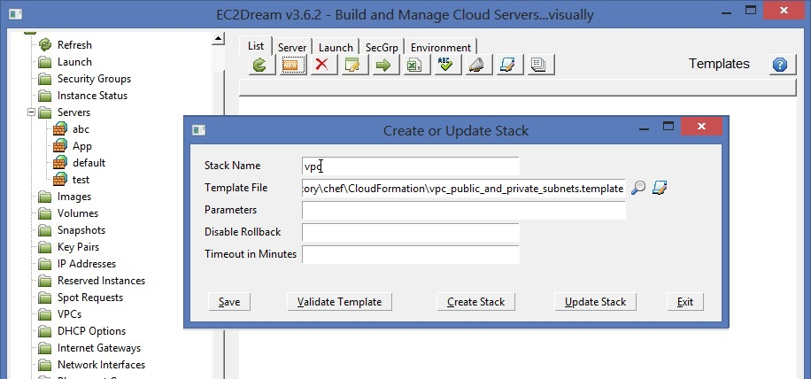
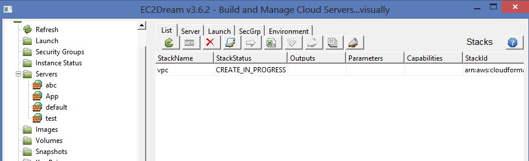
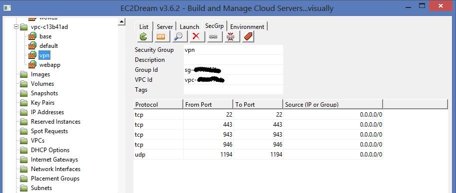
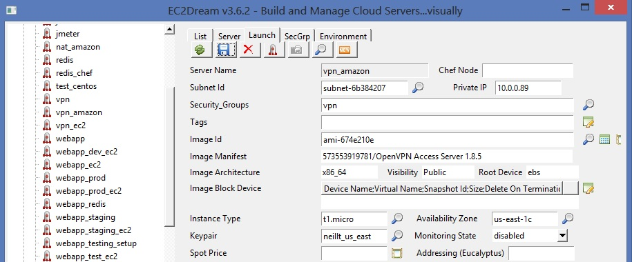
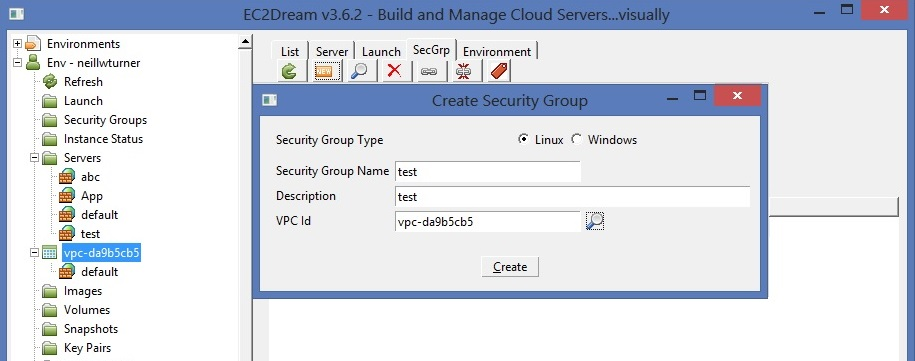
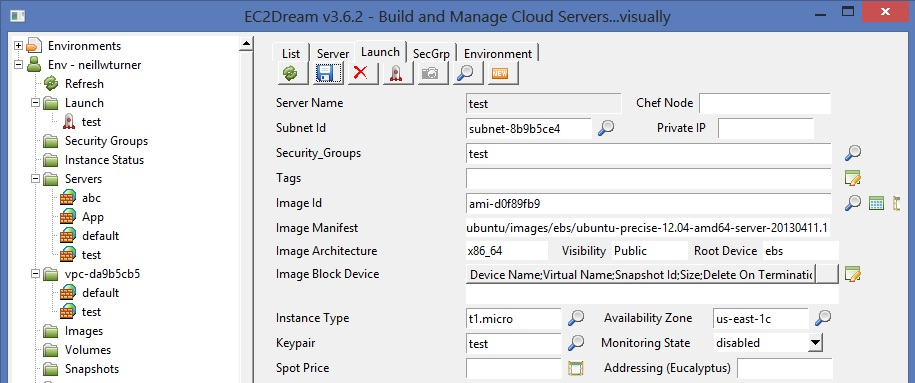
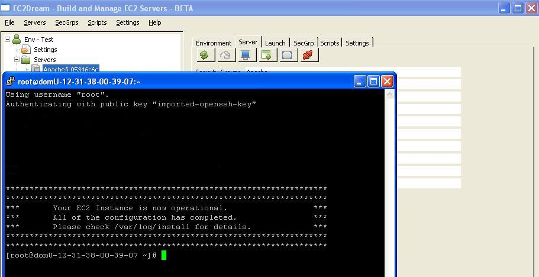

Usng Amazon Virtual Private Cloud
Amazon Virtual Private Cloud (VPC) is a powerful feature that gives complete control over your virtual networking environment, including selection of your own IP address range, creation of subnets, and configuration of route tables and network gateways.The main advantages are:
-improved security
-the ability to configure any network requirement for your applications.
To be able to access the servers in the VPC a VPN server (hardware or software) is required. The easiest way is to run an OpenVPN server.
Create a VPC
a. Use CloudFormation to create a VPC. EC2Dream Fogviz supplies a template vpc_public_and_private_subnets.templateb. Select CloudFormaton and Templates from the EC2Dream Fogviz menu
c. Create a new Configuration by pressng the new button

d. Create the Stack by pressing the "Create Stack" button (Templates can be validated by pressing the "Validate Template" button)
e. See the status of the stack creation by select CloudFormaton and Templates from the EC2Dream Fogviz menu

Run an OpenVPN Server
a. Create a Security Group called say vpn with ports 22,80.... open.
b. Create a launch profile to start an OpenVPN amazon aws appliance with image for the region you are using.
Selet the appropriate ami as listed in:
http://docs.openvpn.net/how-to-tutorialsguides/virtual-platforms/amazon-ec2-appliance-ami-quick-start-guide/

c. Configure OpenVPN
follow the instructions in the following documents:
http://docs.openvpn.net/how-to-tutorialsguides/virtual-platforms/amazon-ec2-appliance-ami-quick-start-guide/
http://www.whiteboardcoder.com/2012/12/amazon-aws-vpc-setting-up-openvpn-server.html
Test accessing an instance in the public subnet of VPC
a. Create a security group in the public subnet of VPC.
a. Create a Launch Profile and Run an instance in the public subnet of VPC.

b. ssh to the instance.

c. Shutdown the instance in the public subnet of VPC.
Add NAT Server support to the OpenVPN server
To be able to access instances in the private subnet of the VPC we need a NAT Server to convert the address.The easiest way to to add Nat server support to our Open VPN Server.
Follow the instructions in the section Setting the OpenVPN server as the NAT Server in
http://www.whiteboardcoder.com/2012/12/amazon-aws-vpc-setting-up-openvpn-server.html
a. Copy the configure-pat.sh to /usr/local/sbin/configure-pat.sh
b. chmod u+x /usr/local/sbin/configure-pat.sh
c. Edit /etc/rc.local and add the following line
/usr/local/sbin/configure-pat.sh
d. Restart the OpenVPN server
Test accessing an instance in the public subnet of VPC
a. Run an instance in the private subnet of VPC.b. ssh to the instance.
c. Shutdown the instance in the private subnet of VPC.
Create an image of the openVPN server
Create an image of the OpenVPN server by pressing the Package button in the Server tab of the OpenVpn Server.OPTIONAL: Secure the Openvpn user
To improve securing on the OpenVPN sever you can secure the openvpn user as per the instructions:Section Disabling the Lock Out aka (bootstrap) account (optional) in:
http://docs.openvpn.net/how-to-tutorialsguides/virtual-platforms/amazon-ec2-appliance-ami-quick-start-guide/